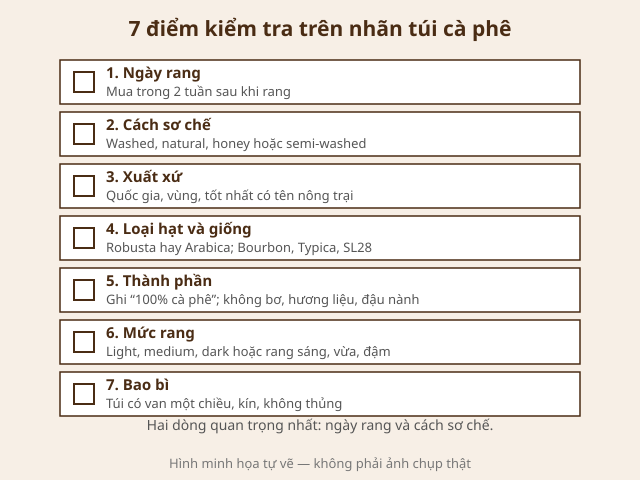

Đọc nhãn túi cà phê: giống, vùng trồng, ngày rang
Tác giả: Ruler
Một túi cà phê đặc sản có thể ghi tới mười mấy dòng thông tin: tên nhà rang, xuất xứ, giống, cách sơ chế, độ cao, mức rang, ngày rang, ghi chú nếm, chứng nhận, khối lượng. Một túi cà phê siêu thị có thể chỉ ghi tên thương hiệu, khối lượng và hạn sử dụng — người mới mua thường không biết dòng nào quan trọng, dòng nào chỉ là quảng cáo, và dòng nào giúp mình pha ngon hơn.
Bài này đọc từng dòng trên nhãn theo thứ tự quan trọng — ngày rang, xuất xứ và cách sơ chế, giống và độ cao, mức rang, ghi chú nếm, chứng nhận — rồi cuối cùng là những dòng ít thông tin mà bạn nên cảnh giác.
Hai dòng quan trọng nhất: ngày rang và cách sơ chế
Nếu bạn chỉ có vài giây trước kệ hàng, JayArr Coffee khuyên nhìn hai dòng trước tiên: ngày rang và cách sơ chế. Ngày rang cho bạn biết hạt còn tươi hay không, còn cách sơ chế cho bạn biết vị trong ly sẽ nghiêng về hướng nào.
Ngày rang là ngày hạt được rang, thường ghi là "Roasted on" hoặc "Ngày rang" — đây là dòng hữu ích nhất trên túi, vì cà phê là sản phẩm tươi, hương thơm giảm dần theo thời gian sau khi rang. Các nguồn ghi khoảng thời gian ngon nhất hơi khác nhau, nhưng đều đồng ý là tính bằng tuần, không phải bằng tháng. JayArr Coffee, dẫn theo James Hoffmann trong cuốn The World Atlas of Coffee, ghi cửa sổ chi tiết nhất cho hạt nguyên pha phin: 0–3 ngày sau rang là rất tươi, 4–6 ngày đang mở ra, 7–21 ngày có thể đang ngon nhất, 22–30 ngày có thể vẫn tốt, 31–59 ngày có thể đang nhạt dần, từ 60 ngày trở lên có thể đã cũ. Craft Coffee Guru ghi gọn hơn, khoảng 2–4 tuần sau khi rang, còn Mug Cult ghi khoảng 4–21 ngày sau khi rang là lúc cà phê đạt phong độ tốt nhất. Với espresso, hạt cần nghỉ lâu hơn, qua ngày thứ 6 mới hết giai đoạn nghỉ.
Điểm chung là: mua cà phê có ngày rang rõ ràng, mua trong khoảng hai tuần sau khi rang, chỉ mua đủ dùng trong vài tuần — theo quy tắc của Hoffmann mà JayArr trích dẫn. Túi không ghi ngày rang thì hãy coi như cà phê đã cũ.
Hạn sử dụng không làm được việc của ngày rang. Hạn sử dụng thường ghi 12–24 tháng, theo Postmart và JayArr — con số đó cho biết cà phê còn dùng được trong bao lâu, chứ không phải còn ngon trong bao lâu. Cà phê đóng gói sẵn thường chỉ ghi hạn sử dụng, có khi tới một năm hoặc hơn sau khi rang, mà không ghi ngày rang, nên bạn không có cách nào biết hạt đã rang cách đây bao lâu.
Cách sơ chế là cách quả cà phê được tách khỏi hạt và phơi khô sau khi hái, và nó ảnh hưởng tới vị trong ly nhiều không kém xuất xứ. Có ba cách phổ biến. Sơ chế ướt (washed): quả được tách vỏ, lớp nhầy phân huỷ bằng cách lên men trong nước khoảng 12–72 giờ, rồi hạt được rửa sạch và phơi khô; ly thường sạch, sáng, rõ nét của xuất xứ và giống. Sơ chế khô (natural): cả quả phơi khô với hạt còn bên trong trong 2–4 tuần rồi mới tách vỏ khô ra; ly có vị trái cây rõ, ngọt, thân vị dày hơn, đôi khi như rượu vang. Sơ chế honey (pulped natural): vỏ tách ra nhưng một phần lớp nhầy còn lại trên hạt lúc phơi, cho vị ngọt và thân vị nằm giữa hai cách trên; còn sơ chế bán ướt, phổ biến ở Indonesia, cho vị ít chua, thân vị dày, hương đất và gỗ.
Xuất xứ: từ quốc gia tới nông trại
Hầu như túi nào cũng ghi quốc gia trồng cà phê, và xuất xứ là gợi ý mạnh nhất về phong cách vị. Xuất xứ chỉ gợi ý phong cách, không quyết định ly. Kenya thường cho cảm giác sáng và chua quả mọng; Ethiopia hay mang hương hoa và cam quýt; Costa Rica thường sạch, ngọt; Brazil thường nghiêng về hạt dẻ và chocolate. Bốn gợi ý này — theo Craft Coffee Guru — chỉ đúng ở mức xu hướng chung: cùng một nước, khác nông trại, khác sơ chế hay khác mức rang là vị đã đổi.
Xu hướng chung chỉ là điểm bắt đầu. Túi càng ghi cụ thể, bạn càng biết rõ mình đang mua gì — một túi chỉ ghi "Ethiopia" thì chung chung, còn túi ghi "Ethiopia, Gedeo, Yirgacheffe" kèm tên trạm sơ chế hoặc nông trại thì cụ thể hơn nhiều. Càng ghi cụ thể càng dễ đoán vị. Một túi chỉ ghi tên nước thì chung chung; túi ghi thêm vùng và trạm sơ chế — ví dụ Yirgacheffe kèm tên trạm rửa Konga mà Mug Cult nêu — thì bạn biết lô cà phê đó đi qua tay ai, ở vùng nào, thay vì chỉ biết nó đến từ một nước. JayArr cũng dẫn lời khuyên của Hoffmann: hãy ưu tiên cà phê truy xuất được nguồn gốc càng rõ càng tốt, vì giữ một lô hàng truy xuất được qua toàn bộ chuỗi cung ứng tốn chi phí, nên thường chỉ cà phê chất lượng cao mới làm được việc đó.
Single origin là cà phê đến từ một nơi — quốc gia, vùng, thậm chí nông trại — với vị đặc trưng rõ của nơi đó, thường ngon nhất khi uống đen. Blend là hạt từ nhiều xuất xứ trộn lại để tạo vị nhà rang thiết kế, ví dụ vị trái cây của cà phê Đông Phi với vị chocolate của cà phê Trung hoặc Nam Mỹ; blend thường làm cho espresso và đồ uống với sữa vì giữ vị ổn định quanh năm, nhưng cũng có nhiều blend ngon cho pha phin.
Giống cà phê: Bourbon, Typica, SL28, Geisha
Giống là tên gọi của từng dòng cây cà phê cụ thể trong họ Arabica — Bourbon, Typica, Caturra, Catuaí, SL28 và SL34 từ Kenya, còn giống bản địa Ethiopia thường ghi là "heirloom" hoặc "landrace". Tên giống cho biết cây thuộc dòng nào, mỗi dòng có xu hướng cho hạt với tính cách vị riêng, nhưng tên giống một mình không quyết định ly ngon hay dở.
Về tiềm năng chất lượng ở độ cao lớn, JayArr ghi lại bảng đánh giá của World Coffee Research: SL28, SL34, Geisha và Pacamara đều ở mức xuất sắc, Typica và Bourbon ở mức rất tốt, Caturra ở mức tốt. Nhưng hai nguồn không phải lúc nào cũng đồng ý với nhau: World Coffee Research xếp SL34 cao ngang SL28, trong khi Hoffmann ghi rằng đa số cho rằng SL34 kém hơn SL28 về chất lượng trong tách. Đánh giá tiềm năng không phải lời hứa về một túi cụ thể, vì nhiều yếu tố khác ảnh hưởng tới vị trong ly.
Túi Ethiopia thường không ghi tên giống cụ thể mà ghi "heirloom" hoặc "landrace": cây ở đó phần lớn là giống bản địa mọc tự nhiên, chưa qua chọn lọc, nên người ta cũng chưa thống kê hết được có bao nhiêu dạng. Geisha (còn viết Gesha) đi ngược lại hoàn toàn: giá thường rất cao, đổi lại là hương hoa và vị giống trà mà ít giống nào có được.
Độ cao: con số mét và các hạng SHB, SHG
Nhiều túi đặc sản ghi độ cao trồng theo mét so với mực nước biển (viết tắt "masl"). Theo Craft Coffee Guru, phần lớn Arabica ngon được trồng ở khoảng 1.200–2.200m. Khí hậu mát ở độ cao làm quả chín chậm, hạt đặc hơn, nhiều đường hơn, chua sáng hơn, hương phức tạp hơn; cà phê trồng thấp hơn thường mềm mại và đơn giản hơn, dù vẫn có ngoại lệ tốt.
Một số túi không ghi số mét mà ghi hạng độ cao, khác nhau theo từng quốc gia — JayArr ghi lại các hạng theo Hoffmann:
| Quốc gia | Hạng cao nhất | Hạng thấp hơn |
|---|---|---|
| Guatemala | SHB: trên 1.300m | Hard Bean: 1.220–1.300m |
| El Salvador | SHG: trên 1.200m | High Grown: trên 900m |
| Honduras | SHG: trên 1.200m | High Grown: trên 1.000m |
Hoffmann nhắc thêm: ở El Salvador, các hạng này không liên quan tới chất lượng hay khả năng truy xuất; ở Honduras, chúng thường thấy trên những lô ít truy xuất được.
Vì vậy, hãy xem độ cao như một gợi ý thô, không phải hạng chất lượng. Một con số cao một mình không đảm bảo ly ngon.
Mức rang trên nhãn: không có chuẩn chung
Uống một ly, bạn có thể đoán được bao nhiêu vị là của hạt và bao nhiêu vị là do rang tạo ra — mức rang chính là gợi ý đó. Có túi ghi rõ light, medium hay dark; có túi chỉ gợi ý qua ghi chú nếm. Ở rang đậm, vị trong ly chủ yếu là vị của quá trình rang: chocolate và caramel nếu rang tốt, đắng và tro nếu rang dở; hạt thường bóng dầu. Rang vừa thì vị rang và vị hạt cân bằng nhau: ngọt và thân vị đỡ lấy nét xuất xứ. Rang sáng giữ nét xuất xứ rõ nhất: trái cây, hương hoa, chua sáng.
Điểm quan trọng là không có chuẩn chung cho mức rang. Craft Coffee Guru nhắc rõ: không có chuẩn ngành, nên mức medium của nhà rang này có thể là mức dark của nhà rang khác. Vì vậy, bạn đừng so sánh mức rang giữa hai nhà rang khác nhau chỉ bằng chữ trên túi. Hãy so sánh bằng màu hạt, ngày rang và vị trong ly.
Mức rang cũng ảnh hưởng tới cách pha. Mug Cult gợi ý chỉnh cách pha theo mức rang: với hạt rang sáng, pha nóng hơn và xay mịn hơn một chút; với hạt rang đậm, pha mát hơn và xay thô hơn một chút — vì hạt rang sáng đặc và chua, còn hạt rang đậm tan nhanh, dễ đắng. Theo JayArr, một túi rang đậm mà người bán giới thiệu bằng nông trại và giống thì đáng xem lại: rang đậm có thể che mất phần lớn thứ bạn đang trả tiền.
Ghi chú nếm: gợi ý, không phải thành phần
Khi túi ghi việt quất, cacao hay mật ong, đó là cách nhà rang ghi lại ấn tượng khi họ nếm thử mẻ đó — không phải danh sách nguyên liệu cho thêm vào túi. Một từ gợi ý chỉ cho bạn biết hương đang nghiêng về nhóm nào: trái cây, chocolate hay hoa. Bạn có thể uống cả túi mà không bắt gặp đúng vị việt quất trong một ngụm nào, và điều đó không có nghĩa túi ghi sai.
Mug Cult gợi ý đọc nhanh theo hướng rang: trái cây, hoa, cam quýt thường đi cùng rang sáng và chua sáng; chocolate, hạt dẻ, caramel, bánh mì nướng thường đi cùng rang vừa đến đậm, thân vị dày hơn. Một điểm nữa JayArr nhắc: chocolate, quả mọng hay caramel trong ly chủ yếu là hương bạn ngửi thấy, không phải vị bạn nếm bằng lưỡi. Lưỡi nhận ra chua, ngọt, đắng và vài vị cơ bản khác; phần "giống chocolate" hay "giống quả mọng" đi qua mũi nhiều hơn.
Chứng nhận và điểm số: đọc đúng giá trị của chúng
Bốn dấu Fairtrade, Rainforest Alliance, USDA Organic, Smithsonian Bird Friendly đều nói về cách trồng, cách trả giá và cách bảo vệ môi trường — không dấu nào chấm vị ngon của ly cà phê. Có dấu nghĩa là đạt tiêu chuẩn của tổ chức đó; không có dấu chưa chắc đã tệ: nhiều nhà rang đặc sản mua thẳng từ nông trại, trả cao hơn mức tối thiểu của chứng nhận, chỉ là không bỏ tiền lấy dấu.
Một số túi in điểm số trên 100. Theo thang chấm của Hiệp hội Cà phê Đặc sản (SCA) năm 2004, 90–100 điểm là xuất sắc, 85–89,99 điểm là tuyệt vời, 80–84,99 điểm là rất tốt, tất cả đều là cà phê đặc sản, và dưới 80 điểm là dưới chuẩn đặc sản; phần lớn cà phê chấm theo cách đó đạt từ 80 đến 88 điểm. Ngày 4 tháng 11 năm 2024, SCA chính thức áp dụng phương pháp đánh giá giá trị cà phê (Coffee Value Assessment) làm chuẩn chấm mới, thay cho quy trình năm 2004: trên thang mới, một loại cà phê không cao không thấp ở mọi tiêu chí sẽ được 79 điểm, nên cùng một con số có thể mang ý nghĩa khác nhau. Dù theo thang nào, điểm số cũng chỉ là đánh giá của một người nếm có đào tạo trên một mẫu, chấm theo cách chuẩn; túi của bạn có thể được rang và pha khác đi.
Nhãn cà phê Việt Nam: rang mộc, rang tẩm và thành phần
Nhãn cà phê Việt Nam có một số điểm khác nhãn đặc sản quốc tế. Khi mua cà phê ở Việt Nam, Postmart khuyên đọc nhãn theo cách riêng. Về thành phần, một túi chỉ toàn hạt rang sẽ ghi "100% cà phê" hoặc ghi tên loại hạt; còn nếu nhãn xuất hiện "hương liệu", "bơ", "ngũ cốc" hay "đậu nành" thì túi đó không còn là cà phê nguyên chất nữa.
Về ngày rang và hạn sử dụng: ngày rang cho biết hạt còn tươi hay không, còn hạn sử dụng chỉ cho biết cà phê còn dùng được trong bao lâu — thường ghi 12–24 tháng. Nhưng khoảng ngon nhất của cà phê chỉ tính bằng vài tuần sau khi rang, ngắn hơn nhiều so với hạn sử dụng ghi trên túi. Loại hạt và vùng trồng càng cụ thể càng tốt, ví dụ Robusta Đắk Lắk, Arabica Cầu Đất. Mức rang và cách sơ chế cũng nên có trên nhãn — rang sáng, vừa hoặc đậm; sơ chế khô (natural), ướt (washed) hoặc honey. Nhãn cũng nên ghi tên, địa chỉ, số điện thoại của nhà sản xuất, và sản phẩm đóng gói nên có công bố theo quy định. Về bao bì, nên chọn túi có van một chiều: chiếc van nhỏ này để khí CO₂ trong túi thoát ra ngoài mà vẫn ngăn không khí bên ngoài lọt vào làm hạt nhanh cũ.
Muốn biết túi cà phê Việt có nguyên chất không, hãy xem lúc rang người ta có cho thêm gì không. Rang mộc — chỉ hạt, không thêm gì: bột nâu và thơm nhẹ tự nhiên, ly pha ra có màu nâu cánh gián. Rang tẩm — có thêm bơ, đường, muối, nước mắm hay hương liệu trong lúc rang: hạt óng dầu, bột dính tay, ly pha ra đen sậm, mùi gắt, vị đắng khét. Trộn Robusta với Arabica vẫn tính là nguyên chất nếu túi chỉ chứa cà phê — chỉ khi lúc rang có thêm bơ, đường, muối, nước mắm hay hương liệu thì mới là rang tẩm.
Postmart cũng ghi rõ: các cách thử tại nhà chỉ giúp sàng lọc ban đầu. Muốn chắc chắn về thành phần, hãy tìm nơi bán công khai đủ thành phần, loại hạt, ngày rang và thông tin nhà sản xuất, đồng thời sẵn sàng cho xem hạt trước khi xay; còn muốn biết chắc chắn thành phần trong túi là gì thì cần mang mẫu đi kiểm nghiệm tại phòng thí nghiệm — nhìn, ngửi hay nếm tại nhà không đủ để khẳng định.
Những dòng ít thông tin: đừng để chúng quyết định
JayArr liệt kê ba dòng ít thông tin mà người mua hay bị thu hút. Thứ nhất, "100% arabica" chỉ nghĩa là không có robusta, chứ không nói gì về chất lượng. Arabica không hề hiếm: Bộ Nông nghiệp Mỹ dự báo 105,9 triệu bao trong tổng số 189,7 triệu bao cà phê thế giới vụ 2026/27 là arabica, khoảng 56%. Dòng này cũng có nghĩa là ít caffeine hơn — Hoffmann ghi robusta có lượng caffeine gấp đôi arabica — nhưng không có nghĩa là ngon hơn.
Thứ hai, số độ mạnh trên túi. Theo Hoffmann mà JayArr dẫn lại, con số này không đo độ mạnh thật của ly — ly mạnh hay nhẹ còn tùy bạn cho bao nhiêu cà phê vào bao nhiêu nước. Thực chất, thang số trên nhiều túi siêu thị chủ yếu phản ánh mức rang, và Hoffmann cho biết ông thường tránh những loại cà phê có thang này.
Thứ ba là hạn sử dụng mà không kèm ngày rang, như đã nói ở trên.
Khối lượng tịnh cũng hay gây hiểu lầm. Khối lượng tịnh chỉ cho bạn biết túi nặng bao nhiêu, thường là 250g, 340g hoặc 500g — nó không nói gì về chất lượng, nhưng giúp bạn tính lượng cà phê dùng được trong bao lâu: một túi 250g pha phin 25g một ly sẽ pha được khoảng 10 ly, nên bạn nên mua túi vừa đủ dùng trong vài tuần sau khi rang, đừng mua túi lớn rồi để hạt nằm lâu trong tủ.
Checklist mua cà phê: 7 điểm kiểm tra trước khi trả tiền
Mẫu dưới đây là phần tự làm của bài này: kiểm tra 7 dòng trên nhãn trước khi mua, theo thứ tự quan trọng.
| Thứ tự | Kiểm tra dòng nào | Đạt khi nào | Nếu không đạt thì sao |
|---|---|---|---|
| 1 | Ngày rang | Ghi rõ ngày/tháng/năm; cách ngày mua không quá 2 tuần | Không có ngày rang: coi như đã cũ, cân nhắc không mua |
| 2 | Cách sơ chế | Ghi washed, natural, honey hoặc semi-washed | Không ghi: hỏi người bán, hoặc chọn túi khác |
| 3 | Xuất xứ | Ghi ít nhất quốc gia và vùng, tốt nhất có tên nông trại/trạm sơ chế | Chỉ ghi tên nước: vị khó đoán, chỉ mua khi giá rẻ |
| 4 | Loại hạt và giống | Ghi Robusta hay Arabica, tốt nhất có tên giống (Bourbon, Typica, SL28) | Không ghi: hỏi người bán, hoặc chỉ mua khi đã quen vị hãng đó |
| 5 | Thành phần | Ghi "100% cà phê" hoặc tên loại hạt; không có hương liệu, bơ, ngũ cốc, đậu nành | Có thành phần lạ: đó là rang tẩm hoặc độn, không phải rang mộc |
| 6 | Mức rang | Ghi light, medium, dark hoặc rang sáng, vừa, đậm | Không ghi: nhìn màu hạt nếu mua hạt nguyên, mua bột thì hỏi người bán |
| 7 | Bao bì | Túi có van một chiều, kín, không thủng | Túi không van, đã mở hoặc rách: hạt tiếp xúc không khí nhiều, hương giảm nhanh |

Hình minh họa được vẽ riêng cho website — không phải ảnh chụp thật.
Kết luận
Đọc nhãn túi cà phê không khó, chỉ cần đọc theo thứ tự. Hãy tìm ngày rang trước tiên: mua trong khoảng hai tuần sau khi rang, chỉ mua đủ dùng trong vài tuần, coi túi không có ngày rang là túi đã cũ. Rồi đọc cách sơ chế và xuất xứ để đoán vị: sơ chế ướt cho vị sạch và sáng, sơ chế khô cho vị trái cây và thân vị dày, xuất xứ càng cụ thể thì vị càng dễ đoán. Giống, độ cao và mức rang giúp bạn chọn chính xác hơn, nhưng mức rang không có chuẩn chung giữa các nhà rang. Ghi chú nếm là gợi ý về hương, chứng nhận nói về cách canh tác chứ không nói về vị, còn "100% arabica" hay số độ mạnh thì ít thông tin hơn bạn tưởng. Khi đã đọc quen, bạn sẽ mất chưa tới một phút trước kệ hàng để chọn được túi cà phê hợp với mình.
Nguồn tham khảo
- Craft Coffee Guru, "How to Read a Coffee Bag Label: Roast Date, Origin, Process and More" — cà phê ngon nhất trong khoảng 2–4 tuần sau khi rang; túi chỉ có hạn sử dụng, thường một năm trở lên sau khi rang, thì không cho biết hạt còn tươi hay không; sơ chế ướt lên men trong nước khoảng 12–72 giờ, sơ chế khô phơi cả quả trong 2–4 tuần; phần lớn Arabica ngon trồng ở khoảng 1.200–2.200m; túi 12 oz tức 340g; bột mất hương trong vài phút đến vài giờ, hạt nguyên giữ tươi hàng tuần; không có chuẩn ngành cho mức rang (truy cập 23/11/2026): https://www.craftcoffeeguru.com/coffee-bag-labels/
- Mug Cult, "How to Read a Coffee Bag Label: Roast Date, Process, Altitude and Variety" — cà phê đạt phong độ tốt nhất trong khoảng 4–21 ngày sau khi rang; hạn sử dụng một mình thường là một năm, gần như không nói gì về độ tươi; hạng SHB và SHG; hạt rang sáng đặc và chua nên pha nóng hơn và xay mịn hơn, hạt rang đậm hoà tan nhanh nên pha mát hơn và xay thô hơn; bột xay sẵn mất hương trong vài ngày (truy cập 23/11/2026): https://mugcult.com/guides/how-to-read-coffee-bag-label
- JayArr Coffee, "How to Read a Coffee Bag Label" — dẫn James Hoffmann trong cuốn The World Atlas of Coffee: mua cà phê có ngày rang rõ ràng, mua trong hai tuần sau khi rang, chỉ mua đủ dùng trong vài tuần; hạn sử dụng tốt nhất thường là 12–24 tháng sau khi rang; cửa sổ độ tươi cho hạt nguyên pha phin: 0–3 ngày rất tươi, 4–6 ngày đang mở ra, 7–21 ngày có thể đang ngon nhất, 22–30 ngày có thể vẫn tốt, 31–59 ngày có thể đang nhạt dần, từ 60 ngày trở lên có thể đã cũ; espresso nghỉ tới ngày thứ 6; thang chấm SCA năm 2004: 90–100 xuất sắc, 85–89,99 tuyệt vời, 80–84,99 rất tốt, dưới 80 dưới chuẩn đặc sản; SCA áp dụng Coffee Value Assessment làm chuẩn chấm mới ngày 4 tháng 11 năm 2024; hạng SHB ở Guatemala là trên 1.300m, SHG ở El Salvador là trên 1.200m, SHG ở Honduras là trên 1.200m; Bộ Nông nghiệp Mỹ dự báo 105,9 triệu bao trong tổng số 189,7 triệu bao vụ 2026/27 là arabica, khoảng 56%; robusta có lượng caffeine gấp đôi arabica (truy cập 23/11/2026): https://jayarr.coffee/blog/how-to-read-coffee-bag-label/
- Postmart, "Cà phê nguyên chất: cách nhận biết, chọn mua, bảo quản" — trên túi cà phê nguyên chất thường chỉ ghi "100% cà phê" hoặc tên loại hạt; ngày rang quan trọng hơn hạn sử dụng (hạn thường ghi 12–24 tháng, nhưng ngon nhất là vài tuần sau rang); van một chiều chỉ cho khí đi ra, không cho không khí đi vào; túi chưa mở ngon nhất 2–6 tuần, túi đã mở 1–3 tuần, bột xay sẵn 1–2 tuần; độ xay theo cách pha: phin vừa đến hơi thô, V60 vừa, espresso mịn, cold brew thô ngâm 12–18 giờ trong ngăn mát; có máy xay thì mua hạt, không có thì mua bột gói nhỏ, ngày rang gần, dùng hết trong 1–2 tuần (truy cập 23/11/2026): http://postmart.com.vn/cam-nang-ca-phe/